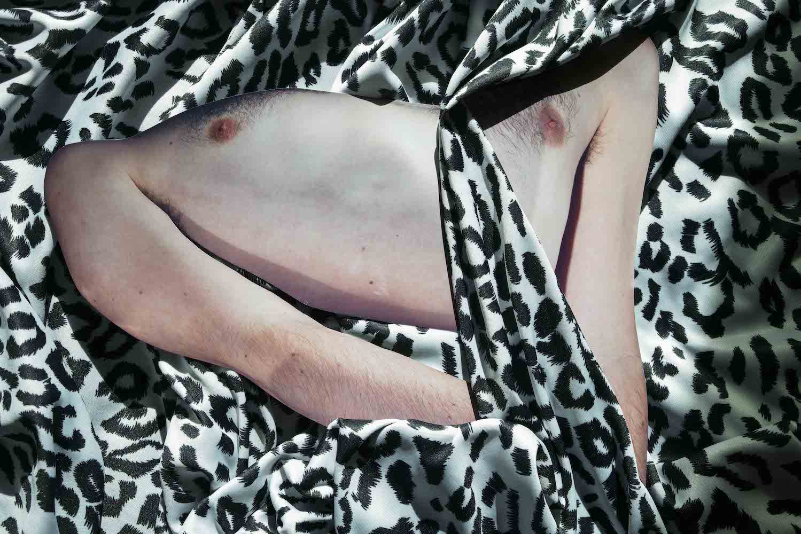
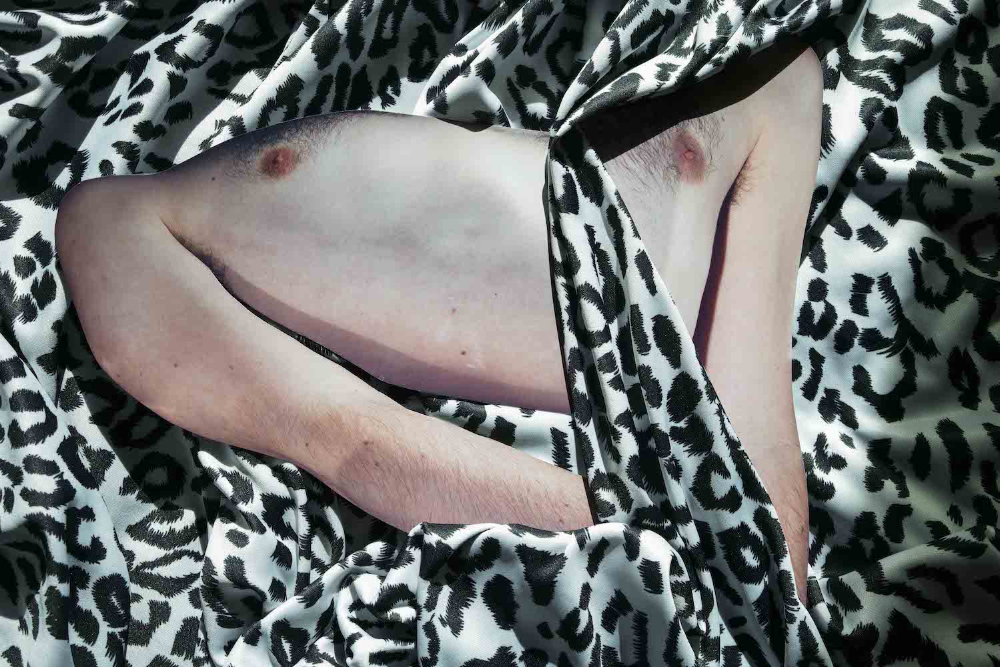
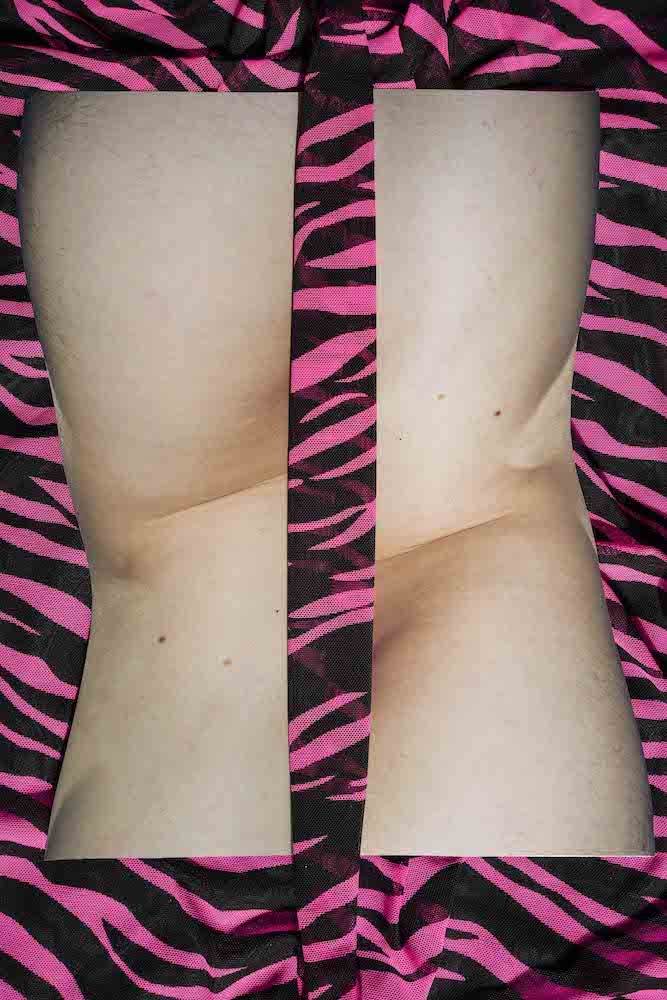
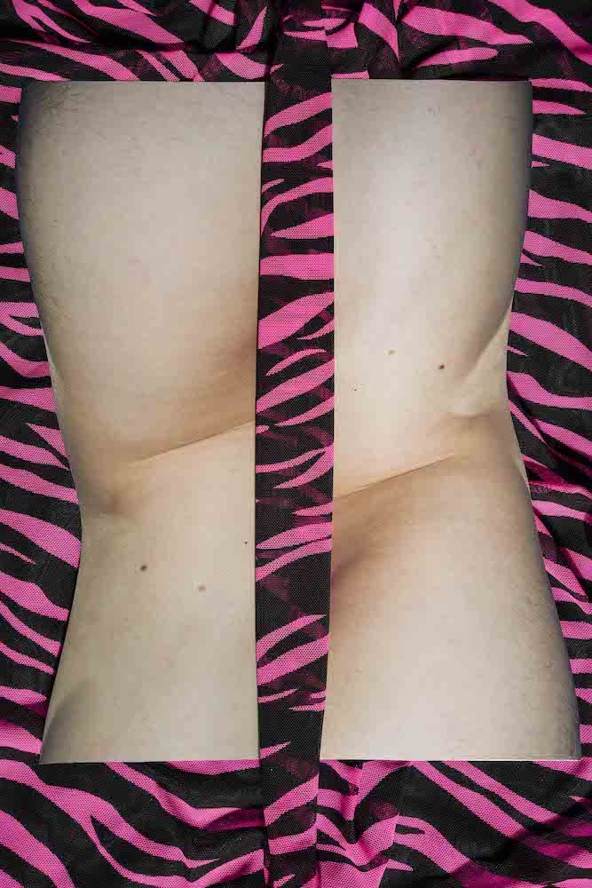

 



野餐, 2020-2021
我的「野餐」，是一場對方為我精心策畫的神祕旅程。
搭車前往目的地的過程、他提的旅行袋，我隱約猜到好像要去野餐，充滿忐忑感又如意料中的，
確實是來到河邊野餐。冬天午後有暖暖的陽光，照耀在整片草地和河面，
我們在樹下鋪上野餐墊和食物，不過隨著野餐當下的情感交流，
我逐漸感受到這不是一場我所期待的野餐，熱情在異樣的時刻轉為平淡而哀傷；
表面看似有說有笑的浪漫畫面，實際上堆積了很多情緒，最終，
彼此的關係在這場野餐裡將近終結。
作品《野餐》想要探討人與人之間的關係與羈絆， 不論雙方握有的權力平衡與否，皆要去習慣及維持平和， 即便有時候是半強迫式且暴力地被迫接受對方的好意。這件作品講述的是一場開放的野餐邀約， 藉著如此通俗又不尋常的社交場景，回溯你我都可能曾經擁有過的一段野餐故事。
作品《野餐》想要探討人與人之間的關係與羈絆， 不論雙方握有的權力平衡與否，皆要去習慣及維持平和， 即便有時候是半強迫式且暴力地被迫接受對方的好意。這件作品講述的是一場開放的野餐邀約， 藉著如此通俗又不尋常的社交場景，回溯你我都可能曾經擁有過的一段野餐故事。
Picnic, 2020-2021
Picnic was a peculiar journey that the other party
had carefully planned for me. Seeing the bags he carried on the ride
to our destination, I suspected that we were about to have a picnic.
Indeed, as I anxiously expected, we set one up by the river. The
warm winter afternoon sun shone across the meadow and glistened in the
water as we laid out the picnic blanket and placed food under a tree.
However, in our following conversation and emotional exchange, I came
to realize that this was not a picnic I had hoped for. An initial
enthusiasm gradually diminished, turning flat and sad. What appeared
to be a joyous setting and romantic scene was in fact complicated by
all kinds of emotions. And in the end, it was at this picnic that the
relationship came close to an end.
Picnic seeks to explore the tensions that occur between people in relationships. Navigating power dynamics is one of balance, but it proves to be difficult when gestures meant to be of goodwill are forcibly offered. This artwork is an open invitation to a picnic. Under this familiar yet uncommon setting, I hope to evoke everyone’s own personal picnic story.
Picnic seeks to explore the tensions that occur between people in relationships. Navigating power dynamics is one of balance, but it proves to be difficult when gestures meant to be of goodwill are forcibly offered. This artwork is an open invitation to a picnic. Under this familiar yet uncommon setting, I hope to evoke everyone’s own personal picnic story.